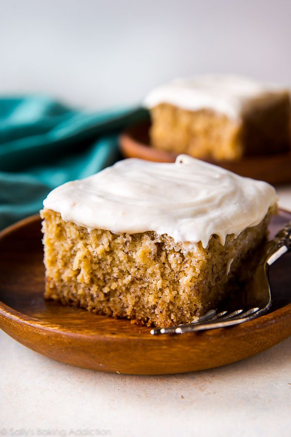

How to make a delicious, just perfect banana cake 😄

Cake Ingredients
- 3 large ripe bananas
- 3 cups (375g) all-purpose flour
- 1 teaspoon baking powder
- 1 teaspoon baking soda
- 1/2 teaspoon ground cinnamon
- 1/2 teaspoon salt
- 3/4 cup (170g) unsalted butter
- 1 cup (200g) granulated sugar
- 1/2 cup (100g) brown sugar
- 3 large eggs
- 2 teaspoons pure vanilla extract
- 1 and 1/2 cups (360ml) buttermilk
Topping Ingredients
- 8 ounces (224g) full-fat block cream cheese
- 1/2 cup (115g) unsalted butter
- 3 cups (360g) confectioners’ sugar, plus an extra 1/4 cup if needed
- 1 teaspoon pure vanilla extract
- 1/8 teaspoon salt
Instructions
- Preheat the oven to 350°F (177°C) and grease a 9×13 inch pan.
- Mash the bananas. I usually just use my mixer for this! Set mashed bananas aside.
- Whisk the flour, baking powder, baking soda, cinnamon, and salt together in a bowl. Set aside.
- Using a handheld or stand mixer fitted with a paddle attachment, beat the butter on
high speed until smooth and creamy. Add both sugars and beat on high speed for 2 m
inutes until creamed together. You can scrape down the sides of the bowl with a ru
bber spatula as needed. Add the eggs and the vanilla. Beat on medium-high speed un
til combined, then beat in the mashed bananas. Scrape down the sides and up the bo
ttom of the bowl as needed. With the mixer on low speed, add the dry ingredients i
n three additions alternating with the buttermilk and mixing each addition just un
til incorporated. Do not overmix. The batter will be slightly thick and a few lumps
is OK.
- Spread batter into the prepared pan. Bake for 45-50 minutes. Baking times vary, so
keep an eye on yours. The cake is done when a toothpick inserted in the center comes
out clean. If you find the top of the cake is browning too quickly in the oven, loosely
cover it with aluminum foil.
- Remove the cake from the oven and set on a wire rack. Allow to cool completely. After
about 45 minutes, I usually place it in the refrigerator to speed things up.
- Make the frosting: In a large bowl using a handheld or stand mixer fitted with a
paddle or whisk attachment, beat the cream cheese and butter together on high speed
until smooth and creamy. Add 3 cups confectioners’ sugar, vanilla, and salt. Beat on
low speed for 30 seconds, then switch to high speed and beat for 2 minutes. If you
want the frosting a little thicker, add the extra 1/4 cup of confectioners sugar
(I add it). Spread the frosting on the cooled cake. Refrigerate for 30 minutes
before serving. This helps sets the frosting and makes cutting easier.
- Cover leftover cake tightly and store in the refrigerator for up 5 days.
Now you should end up with a great looking cake 😍 💗
This cake can also be found here